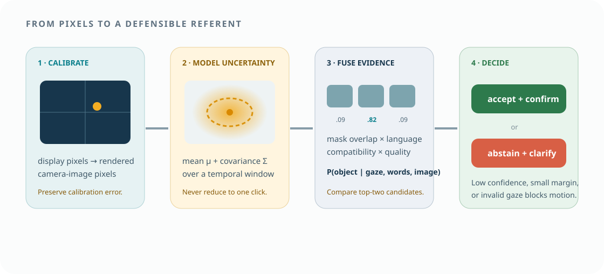
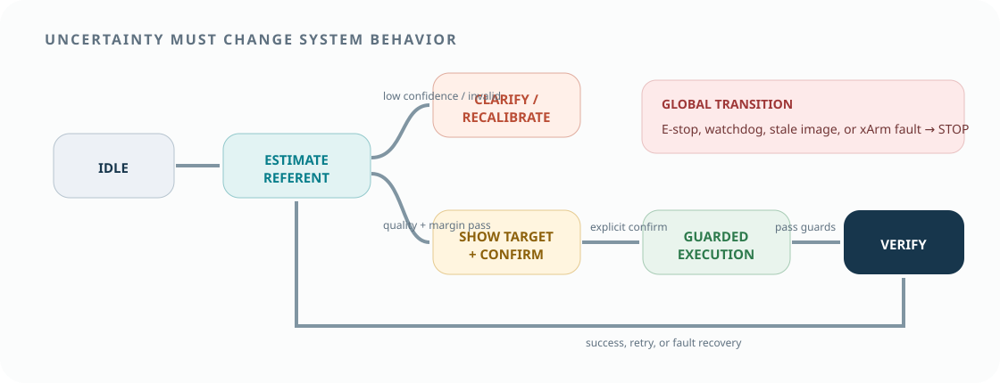

The architecture has one direction of motion authority: a validated proposal can reach the guarded xArm gateway; raw gaze cannot. Every transformation—from display pixels to object posterior to action—remains timestamped, versioned, and replayable.
Original reference architecture. Only the execution guard can reach the robot command gateway.
01 · Architecture
Seven components with explicit contracts
Use separate processes or modules even on one computer. This makes failure handling and later substitution—another tracker, segmenter, VLA, or xArm model—possible without rewriting the experiment.
Original architecture. Dashed logging connections are read-only; the yellow guard is the only route to xArm execution.
Component
Consumes
Produces
Must not own
gaze_client
Tobii SDK stream, calibration, monitor geometry
timestamped gaze samples + quality
robot credentials
scene_server
RGB(/D), camera calibration, layout
frames, candidate masks, scene IDs
target intent
speech_client
push-to-talk audio
transcript, token/utterance times, confidence
motion activation
referent_fuser
gaze, masks, text, image
candidate posterior, quality, abstain reason
xArm command
policy_server
image/state/instruction/gaze representation
action chunk or skill proposal
safety override
operator_ui
live scene, transcript, proposal, state
confirmation, retry, click fallback, stop
silent auto-confirm
xarm_guard
confirmed proposal, state, constraints
validated command, execution outcome
raw gaze interpretation
02 · Hardware and software inventory
Record exact models before choosing the stack
“Tobii” and “xArm” are product families. Sampling access, analytical licensing, payload, reach, gripper, ROS support, and safety settings vary. The inventory is a technical gate, not paperwork.
Required physical items
exact xArm model, controller, firmware, and reachable E-stop
compatible two-finger gripper and spare fingertips
exact Tobii device, mounting bar, supported display, and SDK
overhead RGB camera; optional depth only if it solves a defined need
rigid camera and tracker mounts with measured geometry
marked workspace, low-contrast-free background, trays, and test objects
compute host, GPU/VRAM inventory, network, and power isolation
Required artifacts
xArm TCP, payload, home pose, and workspace configuration
camera intrinsics/extrinsics and a calibration target
Tobii calibration and validation report per user/session
display resolution, scaling, and image-render rectangle
SDK and data-use license decision
model checkpoint license and dependency lockfile
risk assessment, stop/restart checklist, and experiment approval
OFFICIAL PLATFORM IMAGE
xArm physical platform
The exact arm must be confirmed; this image is illustrative. Model-specific reach, payload, control frequency, and joint limits belong in the project configuration.
Use the actual model’s documented reach only as a starting point; the guarded experimental workspace should be smaller and empirically collision-checked.
Gaze mapping fails if the video changes size, moves to another display, or enters fullscreen without updating the transform. The UI publishes its render geometry for every layout revision.
Connect and qualify
Confirm the device sampling stream, timestamps, per-eye validity, and expected head box. Never infer analytical rights from the ability to read a consumer SDK.
Calibrate and validate
Run the official calibration, then validate on independent points concentrated in the robot-feed rectangle. Store angular or pixel error, not only “calibration passed.”
Timestamp at callback
Preserve the device timestamp when available and add a host monotonic timestamp immediately. Do not rely only on later network receipt.
Map to the source frame
Use the logged display, browser, and rendered-video rectangles; handle DPI scaling and letterboxing; retain both raw display and mapped image coordinates.
Filter without erasing evidence
Mark invalid and out-of-frame samples. Derive a temporal gaze distribution, but keep raw samples so different windows and filters can be audited later.
Start with candidate masks and a transparent posterior
A heavy end-to-end model is unnecessary for validating the referent layer. Detect or segment candidate objects, integrate gaze probability over masks, and combine that evidence with language compatibility.

Original implementation path. The classical baseline uses the same masks and calibration, preventing an unfair comparison.
Candidate generation
For controlled objects, start with color/shape segmentation or fiducial-backed ground truth. Add an open-vocabulary detector or SAM-style segmenter only after the fusion path is verified.
Language evidence
Parse source attributes and destination from a bounded grammar first. A VLM parser is optional and must expose low-confidence or conflicting output.
Fusion decision
Compute normalized candidate probabilities, top-two margin, entropy, and coverage. Version thresholds and return a structured abstention reason.
Choose the smallest policy that answers the question
OpenVLA provides an open adaptation path, but no checkpoint should be assumed to control xArm correctly out of the box. Start with a server boundary and one of three action interfaces.
Interface
Policy output
Advantage
Main risk
Recommendation
Referent + scripted skill
source ID, destination ID, grasp class
fast, safe, interpretable
not a low-level VLA contribution
mandatory MVP and B1 baseline
Pose waypoint policy
pregrasp/grasp/place poses
learned grounding with guarded planning
pose frame and calibration errors
strong hackathon hybrid
Action-chunk policy
\(\Delta x,\Delta y,\Delta z,\Delta r,\) gripper across \(H\)
closest to VLA research
data, compute, latency, instability
stretch after L0–L2 gates
OpenVLA reality check: official guidance recommends LoRA when full fine-tuning compute is unavailable, reports roughly 27 GB minimum GPU memory under reduced settings, and supports custom data through RLDS or a custom PyTorch dataset. OFT is the preferred current recipe for faster action prediction, but the team must benchmark the actual GPU and dependency stack. Official OpenVLA instructions ↗
06 · xArm execution
Convert proposals through a guarded skill gateway
Robot motion should be deterministic enough to debug. Keep perception/model callbacks outside the real-time command path, and ensure any stale or malformed proposal is rejected.
Suggested ROS 2 graph
/camera/color/image_raw and camera info
/xarm/joint_states, mode, state, and error
/gazepick/proposal as non-authoritative message
/gazepick/confirmation as discrete event
/gazepick/guard_decision with reason codes
one robot command gateway wrapping vendor/MoveIt APIs
Guard sequence
validate episode/proposal freshness and confirmation
validate source/destination IDs and coordinate frames
generate or receive pregrasp, grasp, lift, place, retreat
solve IK and collision-check inside reduced workspace
The analysis needs to know whether gaze preceded the utterance, whether an overlay captured gaze after it appeared, and which image the policy used. Assign source timestamps and map all streams to a common monotonic clock.
Keep device and callback times for gaze, camera, audio, robot state, action, and UI render.
Event IDs
Emit shared IDs for ready, speech start/end, referent time, overlay render, confirm, phase changes, grasp, release, and stop.
Residual audit
Measure offset, drift, tail latency, frame age, and drops. A median alone cannot establish causal ordering.
Fallback
If timing quality fails, disable online gaze use and retain the episode only for marked diagnostic analysis.
08 · Safety and failure handling
Loss of evidence always reduces autonomy
The gaze/VLA pipeline is experimental and never a protective component. Failure states route to clarification, guarded stop, or an experimenter-controlled reset.

Original safety-aware interaction state machine. The robot does not execute from Estimate or Clarify.
Failure
Software response
Physical response
Restart condition
stale camera or gaze
invalidate proposal and display source-specific reason
no new motion; stop current phase if observation is required
fresh stream + new episode
low posterior / small margin
clarify or click fallback
remain stationary
new accepted referent
policy timeout/malformed action
reject at guard
hold/stop
healthy server + new proposal
workspace/collision violation
reject path, log violated constraint
remain stationary
replanned valid path
xArm fault/watchdog
lock episode and invalidate queue
controller stop or physical E-stop
experimenter checklist and reset
09 · Bring-up tests
Prove each boundary before the integrated demo
Integration should be the last test, not the first. Archive pass/fail evidence for every gate.
Offline replay
Feed recorded gaze, images, and utterances into grounding. Verify deterministic posteriors, abstentions, and versioned outputs.
Screen mapping grid
Look at independent markers across the actual video rectangle. Report error distributions and object-confusion simulations.
Shadow mode
Run the full gaze–language–VLA pipeline while the robot remains disabled. Compare proposals with hidden ground truth.
Robot dry run
Execute validated skills with explicit clicked targets, low speed, empty gripper, and clearance objects before using learned output.
Guard fault injection
Test stale timestamps, wrong frames, out-of-workspace poses, dropped server heartbeat, gripper failure, cancel, and E-stop.
End-to-end pilot
Use non-study team members, fixed pilot scenes, and no model tuning on later held-out evaluation trials.